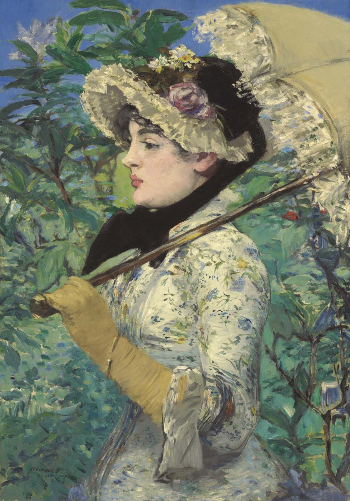

<head>
<meta charset="UTF-8" />
<meta name="keywords" content="drawing, painting" />
<meta name="description" content="drawings by Sunjy" />
<title>Sunjy</title>
<link rel="shortcut icon" type="image/x-icon" href="../../mImages/mCommon/favicon.ico" media="screen" />
<link rel="stylesheet" type="text/css" href="../../mCsses/mCommon/mCssA.css" />
<link rel="stylesheet" type="text/css" href="../../mCsses/mCommon/mCssB.css" />
<link rel="stylesheet" type="text/css" href="../../mCsses/mCommon/mCssC.css" />
<link rel="stylesheet" type="text/css" href="../../mCsses/mCommon/mCssD.css" />
<link rel="stylesheet" type="text/css" href="../../mCsses/mContent/mCssA.css" />
<link rel="stylesheet" type="text/css" href="../../mCsses/mContent/mCssB.css" />
<link rel="stylesheet" type="text/css" href="../../mCsses/mContent/mCssC.css" />
<link rel="stylesheet" type="text/css" href="../../mCsses/mContent/mCssD.css" />
</head>
<script type="text/javascript" src="../../mScripts/mContent/mContentAA.js" /></script>
<script type="text/javascript" src="../../mScripts/mContent/mContentAB.js" /></script>
<script type="text/javascript" src="../../mScripts/mContent/mContentAC.js" /></script>
<script type="text/javascript" src="../../mScripts/mContent/mContentAD.js" /></script>
<script type="text/javascript"></script> 
<script type="text/javascript">
document.write('<div class="mImgAbsolute"></div>');
/*
document.write('<p class="mFontSizeBColor" />From a white paper...</p>');
document.write('<table class="center"><tr><td>');
document.write('');
document.write('</td></tr></table>');
*/
</script>


<script type="text/javascript">
document.write('<p class="mFontSizeBColor" />Spring</p>');
document.write('<p class="mFontSizeSColor" />By Edouard Manet, 1881, painting of actress Jeanne Demarsy.<br>Spring by Édouard Manet depicts the Parisian actress Jeanne DeMarsy in a floral dress with parasol and bonnet against a background of lush foliage and blue sky, as the embodiment of Spring.<br><br>She is portrayed poised and looking straight ahead, a picture of detachment even though she seems fully aware of our gaze.<br><br>This painting was the first of a planned quartet of allegorical works using chic Parisian women to depict the four seasons.<br><br>The idea was to produce a series of seasons personified by contemporary ideals of women, fashion, and beauty.<br><br>The series was never finished, and Manet died a year after completing only the second of the series, Autumn.<br><br>This painting was debuted at the Paris Salon of 1882 and was considered the most celebrated and last public success of Manet’s Salon career.<br><br>For many years, Manet’s paintings had been rejected by the Salon. Unfortunately, after this success, his career that ended tragically a year later when Manet died.<br><br>The picture exhibits Manet’s full range of brushwork, from the delicate floral touches on the dress to the subtlety of Jeanne’s face and the sketch-like strokes of the background.<br><br>Much later, this painting became the first work of art ever to be published in color.<br><br>The French actress wears camel-colored gloves, a floral dress with a ruffled bonnet tied around the neck with a black bow, and a lace parasol.<br><br>Manet, himself organized the ensemble by exploring dressmakers’ and milliners’ shops. It is sad that Manet died at 51 years old and did not complete the series.<br></p>');
document.write('<table class="center" /><tr><td>');
document.write('');
document.write('</td></tr></table>');
</script>

<p>

</p>

